“封城”一月：武汉生活图鉴
原文链接 备份链接 经历整整31天的艰难考验之后，武汉疫情防控已经从无序走向有序，但千万居民的生活从无序到有序才刚刚开始，这个疫情核心区的社会经济生活全面恢复，还面临很多挑战 2020年2月11日，武汉市洪山体育馆武昌方舱医院，社区工作人 …
2020 02 19 星期三 武汉封城第28天
穿过疫城
图/文：艾晓明
今天小区依然限行，昨天到达的女性用品医院自己取走80箱，我们给光谷会展方舱送去的有40箱，还有大约312箱。今天上午先去到工地，和那里的朋友一起分别送医院。
经过小区门岗，我用防护服包了头。如果在家里穿着衣服出来，我担心吓着保安和邻居。

我到达的时候，看见这些小伙伴正围着一个车，原来是两只流浪猫跑进去了，其中一只怎么也不出来。大家忙上忙下敲打了一圈，没辙。车主后来只好带着它回家了。

今天我跟的是这辆车，司机小袁开的，手动档，烧柴油；适宜装货。他车上的标语我也要了一个，我们在想，要是打算整蛊，就往咱们家芳邻车上贴一个，然后我们就躲在家里看戏。

小袁说他住的村里没事，而我们这个小区人居相对密集。社区警官说，这里有8千多户，只有5个确诊病例；不算严重。但是每天居民都收到短信，急急如律令：“不许外出，小区（村）封闭式管理、公共区域管控三个‘全覆盖’，严管外来车辆、外来人员、住户外出、不法行为，所有非必需的公共场所一律关闭，一切群众聚集性活动一律停止。”
*小袁是这样子，护目镜基本不戴。我也没戴，因为起雾，妨碍视线。想起昨晚栎栎说的，有些需要原来都想不到，例如护目镜的专用清洗液。他们后来居然找到了，用捐款订购了2百瓶送到医院。*
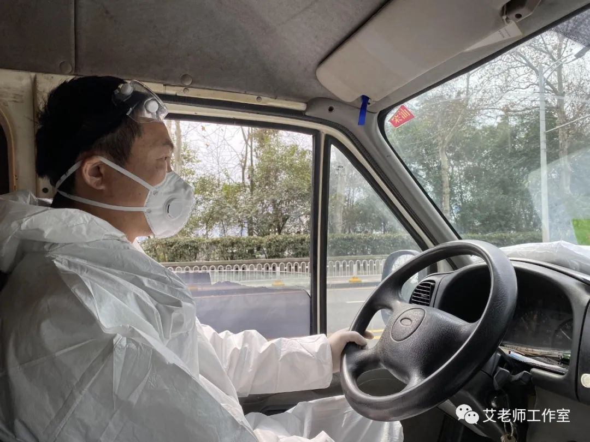
*我们的车从武昌徐东方向开过长江一桥，直奔航空路方向。一路有公安设岗检查，路上车很少。*
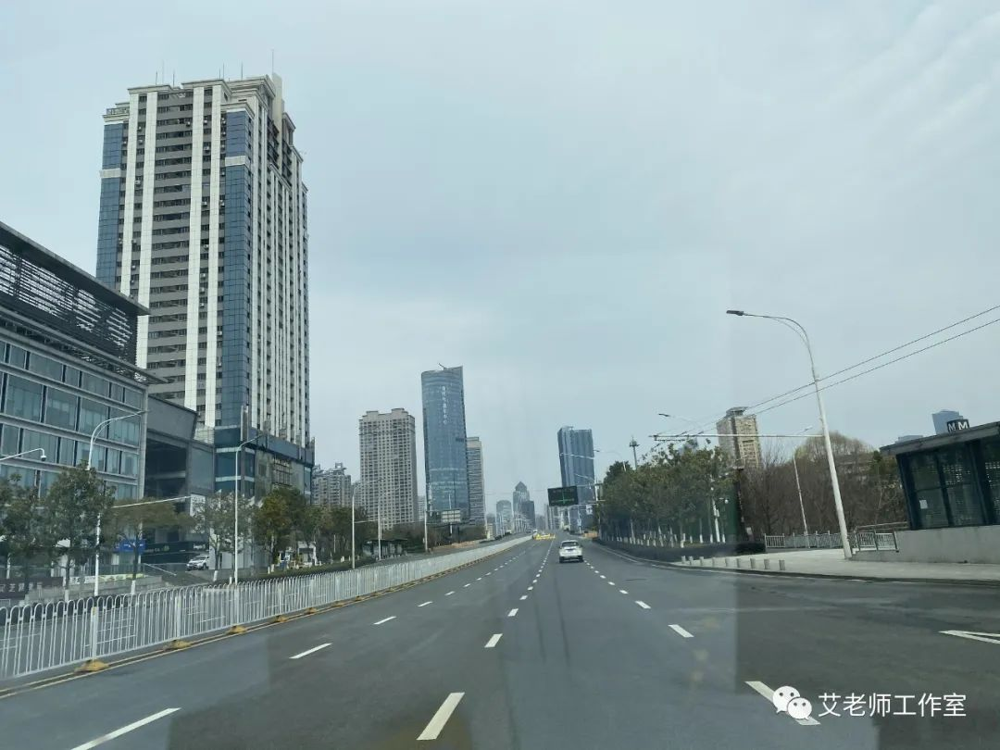
车过汉口老城区，这里疫情最严重，整个街区都封闭了。
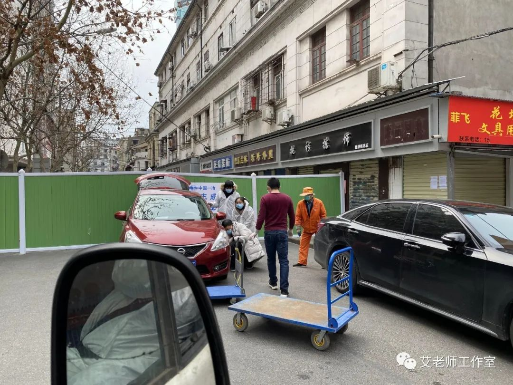
下图是位于江岸区胜利街武汉市中心医院的门诊部，现在这个医院为收治新冠肺炎的定点医院，门诊已经停止。

路上没有车，马路对面，有医护人员和工人拉车运送物质，我走到近处看到这些物品是“离子交换树脂再生剂”（软水机专用）。
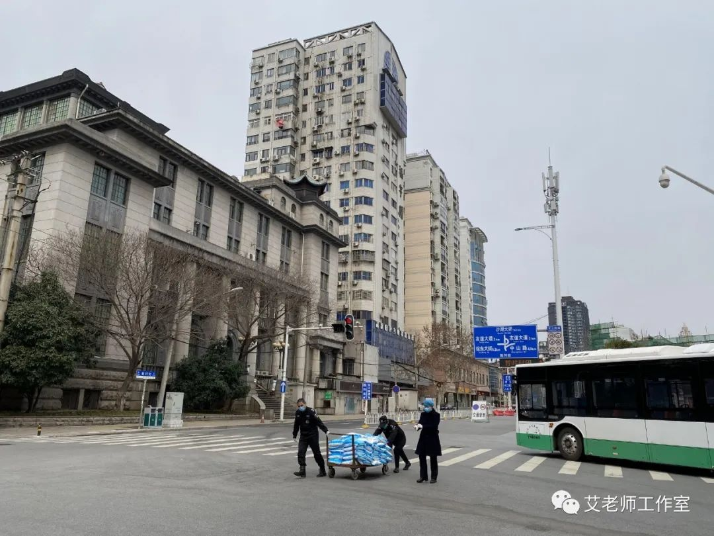
小袁打电话过去，得知我们的接收人在武汉市中心医院的南京路院区，动车前往。
要有这样的通行证，才能畅通无阻：

我们在在靠江边的老街老巷绕行，终于到达武汉市中心医院行政办公楼的门前。
一眼望去，路面上堆满了捐赠物质。

我观察了一下，这些物质有KF 94口罩、折叠式防护口罩、医用防护面罩、医用检查手套、护目镜、空气消毒剂……比较大的一款是医用分子筛制氧机。
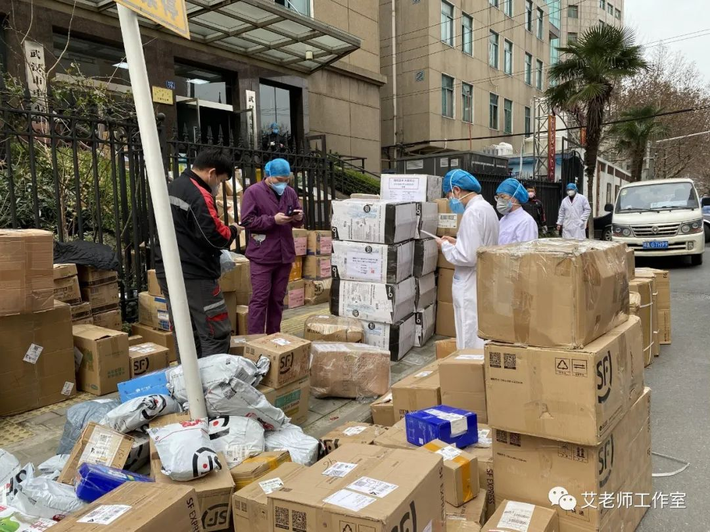
捐赠物质来自各地，捐赠团体有：南加州中华高校联合会、澳门老中青义工协会、上海浦东新区民办惠立学校六年级携手全校师生及社会爱心人士、科德宝宝翎衬布（南通）有限公司、华中科技大学上海校友会、来自浙江的马晋文先生、福建厦门的潘敬瑜老先生、未标出地名的梁珊珊、匿名“来自北京的小小心意”……


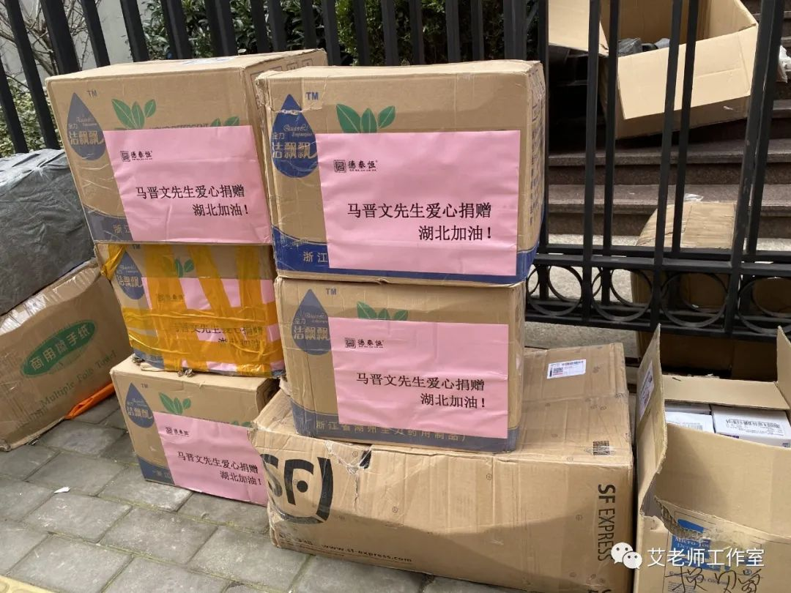
这些千里万里、破疫而来的捐赠，凝聚了多少同胞手足的情谊；又有多少人彻夜不眠，传递信息，捐资采购，找车找人，联络对接……无数平凡的志愿者一路协调，终于落地医院大门口。
现在各种标签的画风也趋于文雅，人大商学院的留言是：豆萁孟季，与尔同期，这句我在上网查了一通，还没找到出处。我理解大概就是患难与共，心往一处想吧。

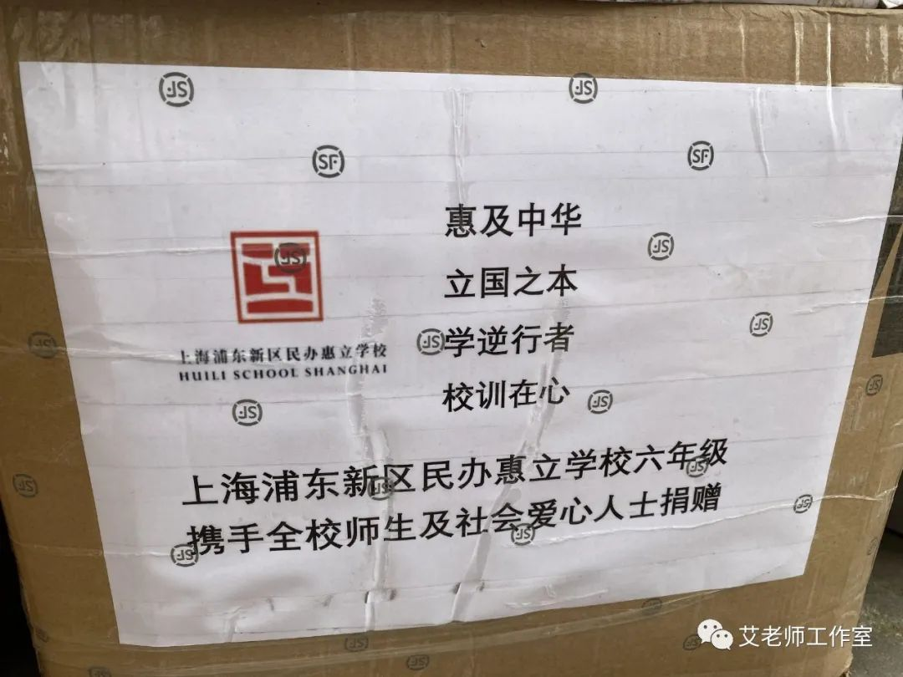
下面这句可谓雅俗共赏，暖心暖胃：春暖花开时 我们相约武汉小龙虾（小龙虾会不会甘心奉献？）：

等待联系人前来收货时，我到中心医院周边转了一圈；在街角就看到了上海路天主堂。
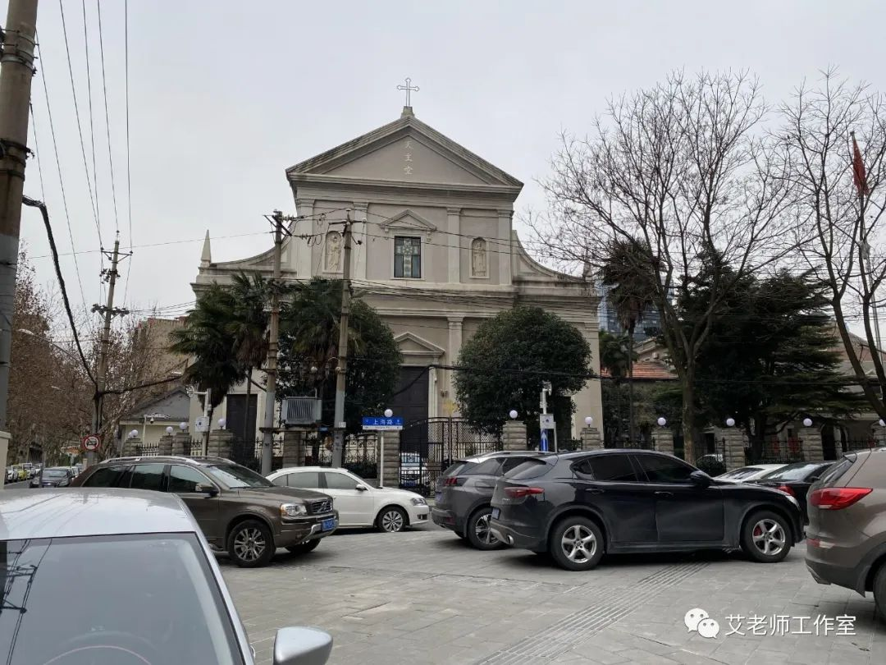
这座百年老教堂是天主教汉口教区主教座堂，又称汉口圣若瑟堂，武汉市中心医院起源于此。1880年，天主堂在汉口创建诊所，开始为普通民众治病。1883年筹资修建了病区大楼，建成汉口天主堂医院。一百三十年后的2010年6月，华中科技大学同济医学院附属武汉中心医院揭牌，迄今这所医院堪称有140年的历史了。
从上海路折回，沿鄱阳街往南，看见道路两边都已封闭。这个入口大门上有“发热门栋”的标示。

穿白色衣服的值班者不仅把守大门，也负责接受快递。门口的蓝色广告上将钟南山的话分行标出，强调封闭的作用：“每个人都不出门 就能拖死耗死这场瘟疫”。
从鄱阳街拐出，就进入从江边抵达闹市的江汉路步行街。这曾是大汉口最热闹的景点之一。步行街道路两旁的小区均已封闭，军运会时的盛况已成往事。

记得看过一张图，街头的人像雕塑都戴上了口罩。没有游人也没有戴口罩的师傅，热干面下给谁吃呢？
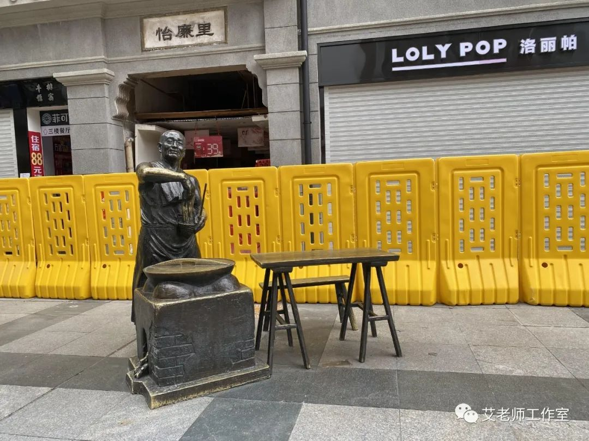
折回鄱阳街，目送走过的防疫人员和戴着志愿者袖章的工作人员。
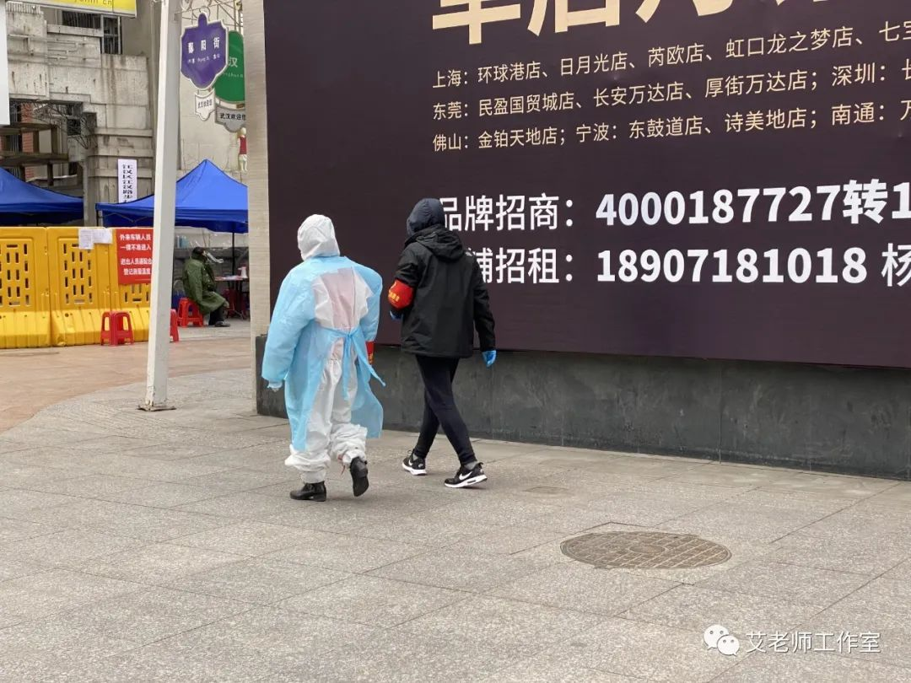
也看见穿着雨衣的快递骑士，为疫区居民承担了出行风险者：

被封闭的扬子社区：

我们的联系人在后湖院区，另一位医护人员来签收了物质：

我没法在这里拍更多照片，因为一位眉目清秀的女士一直用警觉的目光盯着我。在她的要求下，我删了我拍的照片。我没有表达不同意，也没有做任何申辩；我不想在医院门口影响他人工作。
后来我才把这样一件事联系起来，这里就是吹shao 人李 wen L 医生殉职的医院啊!
离开市中心医院，我们继续行车，进到汉口协和医院院内：
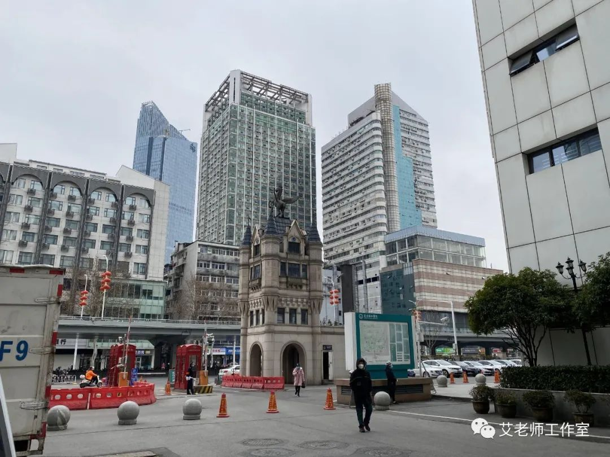
两位小护士出来接货，她们很友好，随身还带着重症医护科护士长给的签收物品的公章；这就是信任啊。护士也不必拿着捐赠者要求的签收单再往病房多跑一次。
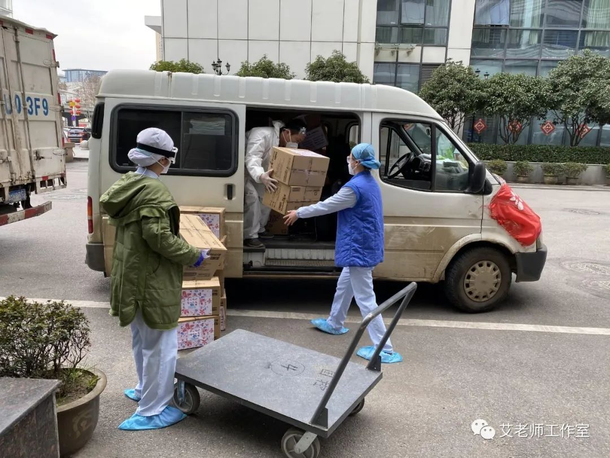
离开协和医院，我们重走航空路、长江一桥，返回徐东工地。
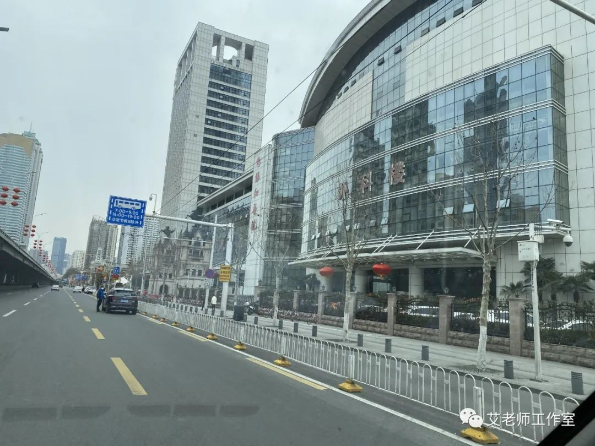
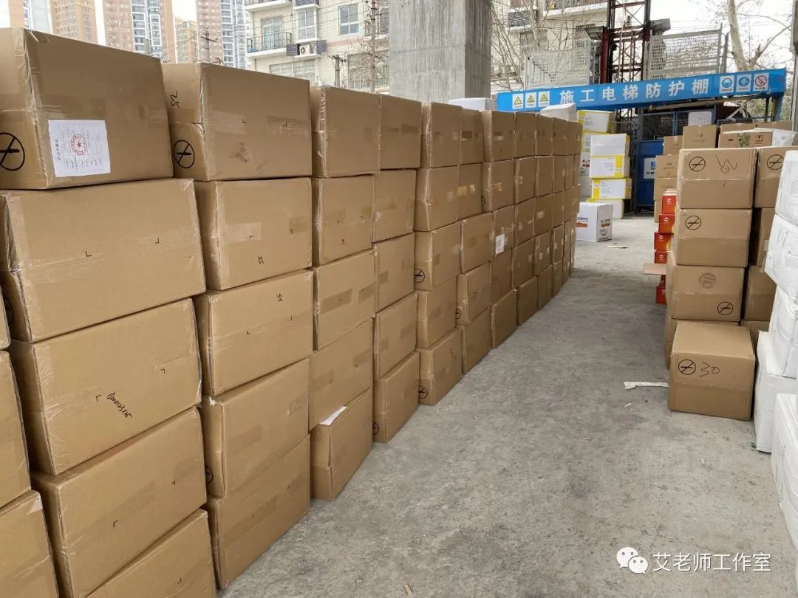
在这里又装了一车货，开往同济医院位于江夏的光谷院区。在路上，栎栎给校友周宁医生打了个电话，周医生——就是那位在网络上直播自己如何感染后自愈的医生，周医生答说正在开病例讨论会。
下面这张工单，标出了复旦武汉校友团队和企业的志愿者们昨天到今天配送的女性卫生用品：
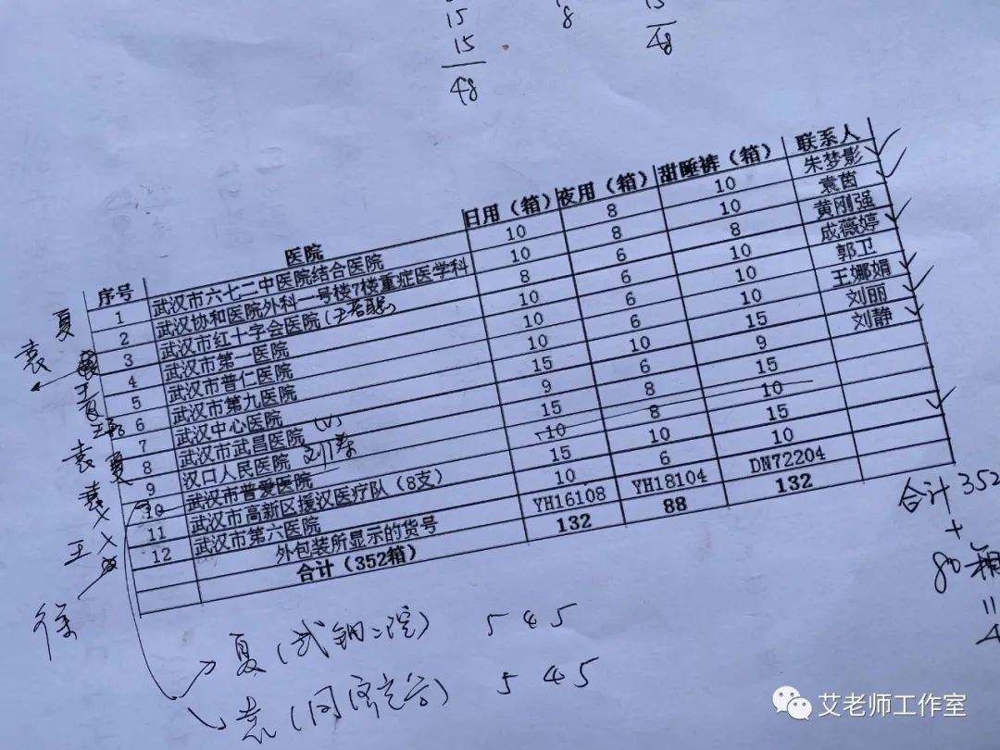
同济医院光谷院区的停车场，平时都难以停车，现在只有很少的车停泊。一位工作人员推着平时查房的小推车出来，结果堆成这样：

两个志愿者就帮着她一路推车，从门诊部入口进入大楼：

回到家里，瞎忙；过了四天，才整理出这些图片。其实发图撰文，随便就是一天。自己也有些迷茫，身处疫区边缘，偶尔随车一行。作为旁观者，当不起读者的敬意和赞美，也不能提供更多的内幕。实际上我没有能力和途径进入到抗疫的中心，而我们偶遇的人，多少也有内在的戒备。不过，我又想到，即使在谈疫色变的当下里，依然有这么多平凡儿女，舍身逆行。读者看见他们，或许也少些恐惧。今天，小袁的一句话打动了我，车过大桥，他说：当夜灯全部开亮，武汉其实也蛮漂亮的。
2020年2月23日补记
原文链接 备份链接 经历整整31天的艰难考验之后，武汉疫情防控已经从无序走向有序，但千万居民的生活从无序到有序才刚刚开始，这个疫情核心区的社会经济生活全面恢复，还面临很多挑战 2020年2月11日，武汉市洪山体育馆武昌方舱医院，社区工作人 …
原文链接 备份链接 ********** *****如果没有这场疫情，彭银华的人生才刚刚展开，他29岁，将至而立之年，在去年才正式成为江夏区第一人民医院的呼吸内科医师；**********和妻子结婚两年，他原计划在2月1日为她准备一场迟到 …
原文链接 备份链接 从2月7日到现在，一方面大家的活动越来越丰富，另一方面由于轻症患者比较多，人们病情都慢慢恢复。所以，我看到每个人脸上的笑容都变多了。 口述 | 余 毅 整理 | 王仲昀 这一个月终于要过去了。 2月21日上午，在等待几 …
原文链接 备份链接 近50万人的社区防疫战， 流动人口密集与社会治理下沉之困 天通苑人员密集，外来人员多。2月6日以来，北京市疾控中心连续发布新发病例活动过的小区或场所，天通苑社区占了6例。 从最早风传限制外地人员返回社区，到天通东苑二区 …
原文链接 备份链接 新型冠状肺炎肆虐的当下，发热孕妇在孝感的处境很尴尬：妇产科不接收发热孕妇，发热门诊不接受孕妇，医院之间相互推脱，他们得不到治疗的机会。 文 | 吴美芬 1月22日，在武汉工作的邹杰（化名）和怀孕四个月的妻子，回到家乡孝 …